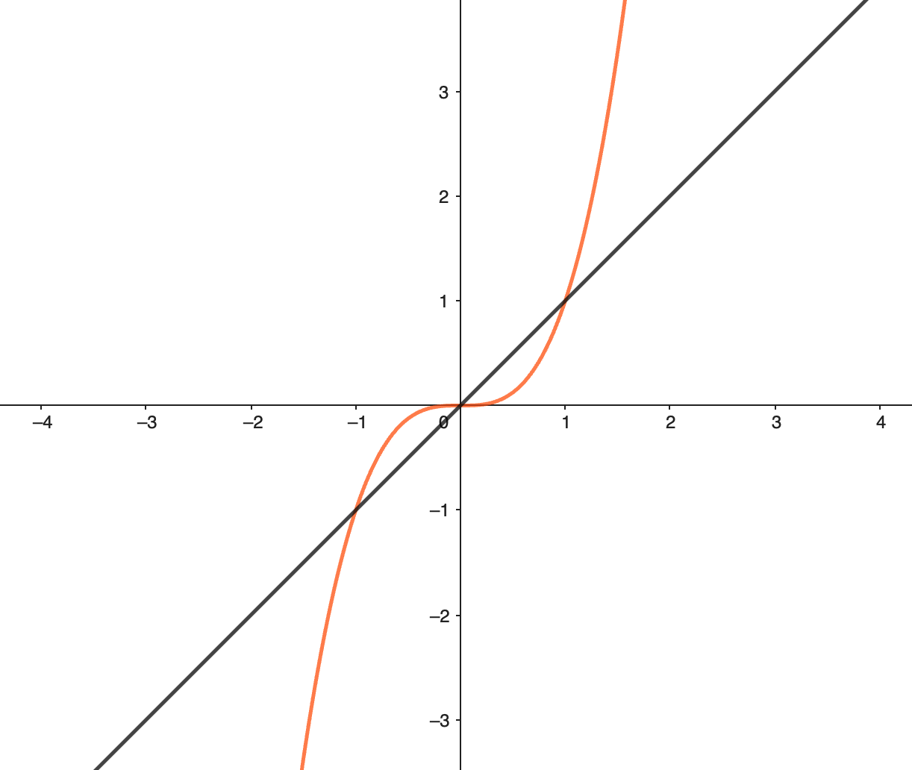
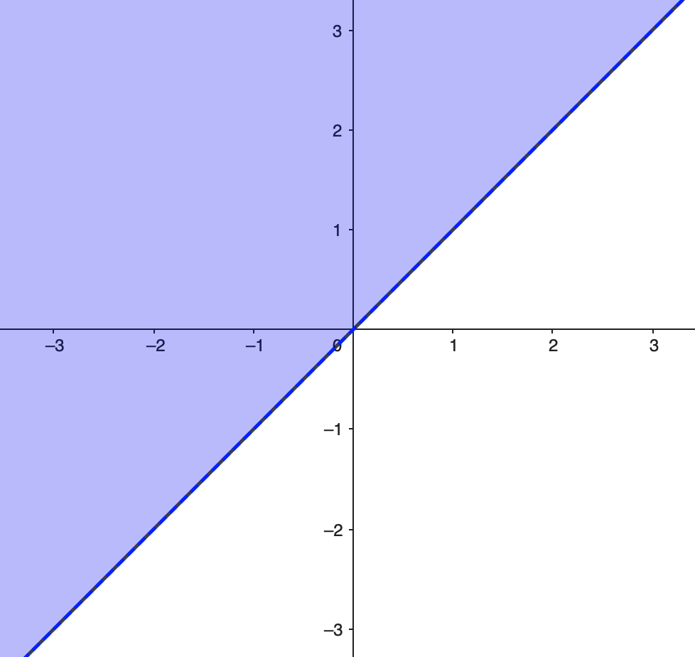
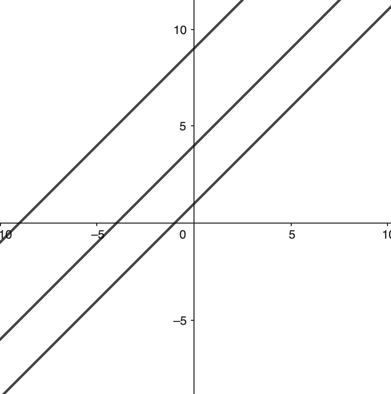
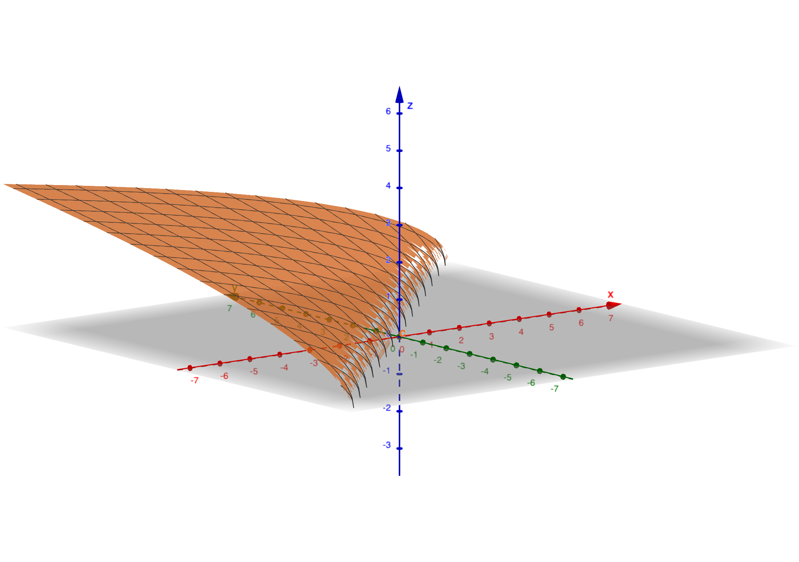

Michigan State University
Math 234 – Spring 2024
Lecture notes
1 Function of several variables
A function of two variables is a rule that assigns to each ordered pair of real numbers \((x,y)\) in a set \(D\) a unique real number denoted by \(f(x,y)\). The set \(D\) is the domain of \(f\) and its range is the set of values that \(f\) takes on, that is, \(\{ f(x,y):(x,y)\in D\} \).
We often write \(z=f(x,y)\).
The graph of \(z=f(x,y)\) is the set of all points \((x,y,z)\in \mathbb {R}^3\) such that \(z = f(x,y)\) and \((x,y)\in D\).
Consider \(f(x,y) = \sqrt{16-x^2-y^2}\). Sketch the domain of \(f\). Graph \(z=f(x,y)\) using traces of \(z=0, x=0, y=0\).
The domain us \(D = \{ (x,y)\in \mathbb {R}^2: 16-x^2-y^2\geq 0\} = \{ (x,y)\in \mathbb {R}^2: x^2+y^2 \leq 4^2\} \). This is the (closed) circle centered at \((0,0)\) with radius \(4\). The trace of \(z=0, y=0, x=0\) give us \(x^2+y^2 = 16\), \(z^2+y^2=16\) and \(z^2+x^2=16\), i.e., in any cross-section it is a circle, therefore the graph of this function is a sphere of radius \(4\) in \(\mathbb {R}^3\) (but only half of the sphere, the upper half as \(z\geq 0\)).
The contours of a function \(f\) of two variables are the curves with equations \(f(x,y) = k\), where \(k\) is constant (in the range of \(f\)).
Sketch the level curves of \(f(x,y) = \frac{1}{x^2+y^2}\), with \(k=\frac{1}{9}, \frac{1}{4}, 1, 4, 9\). Use these to attempt to sketch a 3D version of the graph.
With \(k=\frac{1}{3}\) we have \(f(x,y) = \frac{1}{9}\) is equivalent to \(x^2+y^2 = 3^2\), it is a cirlce. Similarly with \(k=\frac{1}{4}\) it is a circle \(x^2+y^2=4\). We have a set of cirles centered at \((0,0)\) with radius \(3,2,1,\frac{1}{2}, \frac{1}{3}\), correspondingly to \(k=\frac{1}{9}, \frac{1}{4}, 1, 4, 9\).
Note: if \(f(x,y)\) is a 2-variables function then \(\mathrm{graph}(f)\) is 3D (on the left), but its contours are 2D as in the picture (on the right).
A function of 3 variables is \(f(x,y,z)\) from a domain \(D\subset \mathbb {R}^3\) to \(\mathbb {R}\). The level surfaces of \(f(x,y,z)\) are the surfaces with the equation \(f(x,y,z) = k\) where \(k\) is a constant (by looking at level surfaces, we can view it in 3D, instead of the graph of \(f\) is in 4D).
Find the domain of \(f(x,y) = \frac{(x-1)(y+2)}{(y-x)(y-x^3)}\). Sketch and write the domain in set notation.
\(D=\{ (x,y)\in \mathbb {R}^2: y\neq x, y\neq x^3\} \). The domain is the whole plane \(\mathbb {R^2}\) (the \(xy\)-plane) removing the line \(y=x\) and the curve \(y=x^3\).

Consider the function \(z=f(x,y) = \sqrt{y-x}\).
Dmain \(D = \{ (x,y): y-x\geq 0\} =\{ (x,y): y\geq x\} \). (The line \(y=x\) is included.)
The range is \(z\in [0,+\infty )\).
Sketch some level curves and the graph
 
2 Partial derivatives
The partial derivatives of \(f(x,y)\) with respect to \(x\) at \((a,b)\) is denoted by \(f_x(a,b)\) and is given by
\begin{equation*} f_x(a,b) = \lim _{h\to 0} \frac{f(a+h,b) - f(a,b)}{|h|}. \end{equation*}This is equivalent to considering \(y\) as a constant and taking derivative in \(x\).
The partial derivatives of \(f(x,y)\) with respect to \(y\) at \((a,b)\) is denoted by \(f_y(a,b)\) and is given by
\begin{equation*} f_y(a,b) = \lim _{k\to 0} \frac{f(a,b+k) - f(a,b)}{|k|}. \end{equation*}This is equivalent to considering \(x\) as a constant and taking derivative in \(y\).
Other notations
\begin{align*} f_x(x,y) & = f_x = \frac{\partial f}{\partial x} = \frac{\partial f}{\partial x}(x,y) = \frac{\partial z}{\partial x} = D_xf \\ f_y(x,y) & = f_y = \frac{\partial f}{\partial y} = \frac{\partial f}{\partial y}(x,y) = \frac{\partial z}{\partial y} = D_yf . \end{align*}Second-order derivatives:
\begin{align*} (f_x)_x & = f_{xx} = \frac{\partial }{\partial x}\left(\frac{\partial f}{\partial x}\right) = \frac{\partial ^2 f}{\partial x^2} = \frac{\partial ^2 z}{\partial x^2} \\ (f_y)_y & = f_{yy} = \frac{\partial }{\partial y}\left(\frac{\partial f}{\partial y}\right) = \frac{\partial ^2 f}{\partial y^2} = \frac{\partial ^2 z}{\partial y^2} \\ (f_x)_y & = f_{xy} = \frac{\partial }{\partial y}\left(\frac{\partial f}{\partial x}\right) = \frac{\partial ^2 f}{\partial y \partial x} = \frac{\partial ^2 z}{\partial y \partial x} \\ (f_y)_x & = f_{yx} = \frac{\partial }{\partial x}\left(\frac{\partial f}{\partial y}\right) = \frac{\partial ^2 f}{\partial x \partial y} = \frac{\partial ^2 z}{\partial x \partial y} . \end{align*}Note the sequence: the first derivative is taken closest to the function.
(Clairaut’s Theorem) The order of taking derivatives (around a point \((a,b)\)) does not matter if the second order derivaties are continuous and defined around a point \((a,b)\).
\begin{equation*} \frac{\partial }{\partial x} \frac{\partial f}{\partial y}(a,b) = \frac{\partial }{\partial y} \frac{\partial f}{\partial x}(a,b). \end{equation*}The gradient
\begin{equation*} \nabla f(a,b) = \left(f_x(a,b), f_y(a,b)\right) \end{equation*}gives the direction in which the value of the function increases the fastest.
We have
Let \(v(x,y) = \frac{xy}{x-y}\). Compute \(v_x, v_{xx}, v_{xy}\).
We use product rule or quotient rule, or any rule from Calculus 1 and 2:
Find \(f_{xyz}\) for \(f(x,y,z)= xyz + (x^2+y^2) \frac{\sin ^{-1}(x\sqrt{y})}{\tan (x)}\).
Note that \(\frac{\partial }{\partial x}(\sin ^{-1}(x)) = \frac{\partial }{\partial x}(\arcsin (x)) = \frac{1}{\sqrt{1-x^2}}\). We compute (product rule, then quotient rule)
Let us not computing the derivative of that term for now, for a reason we will see soon. Now we have
Now we have
The intergral is zero, since there is no \(z\) involved, and we treat \(x,y\) as constants when taking \(\frac{\partial }{\partial z}\).
Suppose you are surrounded by bees given by the bee density function
You are currently standing at \((1,1)\). Which of the four directions would be best to run in \(\{ \textbf{i},-\textbf{i}, \textbf{j}, -\textbf{j}\} \)?
We have
The best direction to run would be the opposite of \((-2,5)\), i.e, \(\textbf{v} = (2,-5)\). Now among the 4 directions, we choose the one that is closest, i.e., taking the dot product to find the one with smallest angle, i.e., \(\cos \theta \) the biggest:
For \(\textbf{i} = (1,0)\) then \((1,0)\cdot (2,-5) = 2\).
For \(-\textbf{i} = (-1,0)\) then \((-1,0)\cdot (2,-5) = -2\).
For \(\textbf{j} = (0,1)\) then \((0,1)\cdot (2,-5) = -5\).
For \(-\textbf{j} = (0,-1)\) then \((0,-1)\cdot (2,-5) = 5\).
Therefore we choose \(-\textbf{j}\).